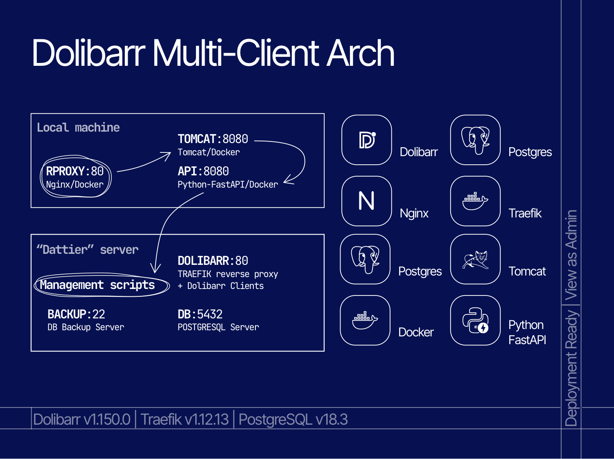

Le gros projet de cette fin de 4e semestre du BUT Informatique, premier semestre de spécialisation en Systèmes et Réseaux, c'était de réaliser un projet dans une mise en contexte claire : nous sommes une entreprise mettant à disposition de clients des services d'hébergements pour leurs PGI (Progiciels de Gestion Intégrée). En pratique, cela passe par l'hébergement multi-clients (avec automatisation côté client) d'instances Dolibarr.
Le défi pour ce projet est avant tout architectural. Il demande de s'attarder sur la mise en place d'instances Dolibarr afin de répondre aux besoins de sécurité, d'isolation et de confort côté client : aussi bien autour de leurs bases de données que de leurs instances privées. Le tout doit se faire de manière fluide (Dolibarr est un logiciel web qui consomme beaucoup de ressources), sans se faire ressentir sur les performances globales du serveur de virtualisation unique mis à notre disposition, Dattier.
Mais comme toujours, nous avons voulu creuser un peu plus. Si le sujet de base se cloisonne à la gestion des clients en ligne de commandes, il demande tout de même l'intervention d'un administrateur pour la gestion des clients (créer/supprimer une instance, gérer les machines à la main). Et pour nous, c'était hors de question. Alors nous avons voulu rajouter un défi supplémentaire. Nous allions coder une API et un serveur Web (Java EE) afin de fournir aux clients leurs propres accès. Le défi était donc de taille, car les délais étaient limités.
Les contraintes pour ce projet sont claires : Bash, Docker, Traefik, Dolibarr. Ni plus, ni moins. Traefik sera utilisé comme reverse proxy avancé (là où nous utilisions Nginx auparavant, c'est un bond en avant), Docker pour la gestion des instances, et Bash pour toute l'automatisation. Interdiction formelle de faire intervenir un outil moderne tel que Ansible, Puppet, Kubernetes.
Pour notre API et notre serveur web, donc, fort heureusement ces contraintes ne s'appliquent pas, car ce bonus est hors-scope. Cependant, l'API doit bel et bien faire le pont avec les scripts Bash à la main, ce qui va demander une gestion fine des codes de retours et du parsing de lignes de commande.
Pendant le découpage du travail, il m'a été laissé le soin de fournir une plateforme stable pour l'exécution des machines virtuelles (s'assurer qu'elles tournent et que leur provisionnement s'effectue correctement), la gestion des clients, des instances. Mon coéquipier s'est quant à lui occupé de toute la partie métier, la logique de création des bases de données, la gestion des accès, de la sécurité.
Enfin, pour la partie bonus avec l'API et le serveur web, car c'était surtout mon idée, je l'ai entièrement codée sur mon temps libre pendant les dernières semaines du projet.
Le principal de ce projet reste sa partie locale, donc tout ce qui s'effectue sur le serveur Dattier et qui a été automatisé par Bash. En cela, le résultat est plutôt bon ; nous sommes fiers d'avoir pu obtenir une très bonne note sur cette partie.
Pour ce qui est de l'API et du serveur web, le gros résultat, car la soutenance ne contenait pas sa présentation (du moins, elle n'en faisait office que de bonus), je suis avant tout fier d'avoir pu me prouver que je pouvais boucler un projet d'une telle envergure en restant rigoureux jusqu'à la fin, et en terminant son déploiement danss les temps.
Ce que je retiens avant tout de ce projet, c'est la gestion de ce qu'on appelle l'over-engineer. C'est actuellement mon défi le plus important, l'enjeu étant de mon côté de savoir doser entre mon plaisir personnel et le réalisme face à un souci demandant exigence et précision. Ce projet m'a clairement permis d'initier cet apprentissage à ne pas céder à la tentation de toujours faire trop gros, de rationnaliser, et surtout de prioriser ce qui est attendu, avant de faire mieux. Si je pouvais retenir une seule phrase de tout ceci, je dirais que le mieux est l'ennemi du bien.